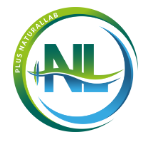
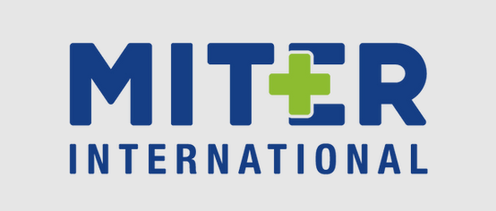
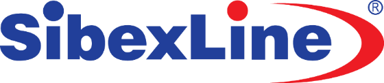
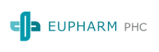
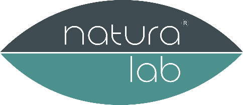
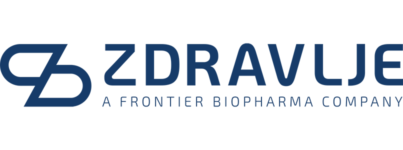
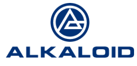

AI Digital Operating System for Pharma
One AI cockpit for the entire pharma company.
VSM connects sales force, finance, ROI, investments, legal, compliance, marketing, medical and management into one operating layer that sees what is happening, recommends the next move and measures the result.
26% sales uplift
34% productivity gain
$8.71 return per $1 invested
AI HUB
VSM
Finance
Sales
ROI
Market data
Legal
Compliance
Finance
€248k
investment tracked
Legal
12
active approvals
ROI
3.4x
best campaign
Compliance
99%
audit ready
Real results & ROI
Client performance data shows growth, adoption and operational discipline.
Sourced from proprietary client performance analysis 2024-2025.Mindset shift
Companies do not have a tools problem. They have a systems problem.
VSM turns scattered CRM, ERP, Excel, finance, legal and market data streams into one commercial brain that guides the company from signal to action.
The Commercial Brain
Unified layer
VSM
Insight
Action
Result
Optimization
You are not buying another tool.
You are buying a new way for your company to think, decide and execute.
Platform
VSM connects every team that influences revenue, risk and profit.
VSM sits above existing sources and turns them into a unified business layer for sales, finance, investments, ROI, legal, marketing, market access, medical teams and management.
CRM
ERP
Excel
IQVIA / OneKey
Wholesalers
Unified business layer
VSM
Data harmonization, AI insights, workflows, approvals and dashboards.
Live KPI stream
AI recommendations
Commercial intelligence hub
One view of HCP/HCO, pharmacies, brands, regions, teams and markets.
Digital execution platform
Plans, visits, targets, follow-up and outcomes connected in the same workflow.
Multi-market dashboard
Regional KPI, ROI, sales and activity visibility across 2+ markets.
Compliance ready
Roles, access control, audit log, consent tracking and paperless documentation.
Not only sales force
VSM is the operating layer for functions that usually work in silos.
Who it is for
Built for regional pharma companies that need performance visibility across markets.
Teams that need disciplined planning, coverage tracking and execution visibility.
Regional operations where management needs one cockpit across countries.
Companies where critical decisions depend on manual consolidation and delayed reports.
Organizations that need to know where budgets, campaigns and field activity pay back.
AI is not a feature
AI is the operating layer connecting money, documents, people and results.
Projected ROI 2.1x
Coverage risk Medium
Report status Refreshing
Signal detection
Coverage is below optimal frequency, while investment has room for smarter reallocation.
Next best action
Increase visit frequency and shift part of the budget toward a segment with stronger ROI signal.
Increase visits +20%
Auto reports
Weekly report updates coverage, budget burn, ROI and legal bottlenecks for management.
Insight
Action
Result
Optimization
WOW modules
Financial discipline, field execution and real-time ROI in the same workflow.
Marketing86%
Sales Ops72%
Product Dev58%
T&E42%
Projected ROI 3.4x
Remaining budget €82k
Costs & advertising material
Targets, budgets, investments
Receipt to export in one flow
Receipt capture, OCR amount, expense type, centralized review and export with attachments.
Where money truly pays back
Budget allocation by brand, region and campaign, connected to sales and performance.
No paper, delays or missing documents
Digital documents, e-signatures, centralized archive and clear approval history.
Performance co-pilot
Automated insights, issue detection, action recommendations and impact measurement.
The result:
Always know exactly where your money generates the highest ROI.
VSM module suite
From sales and finance to legal documents, ROI and sell-out intelligence.
Finance, investments and expenses
Budget & Investments, Field Expenses and Promotional Material modules track budgets, marketing spend, expense categories, remaining budgets and material consumption by rep, client, institution and period.
Sales execution and pharmacy protocols
Protocols with Pharmacies, Detailing and Field KPIs connect targets, visit plans, realized activities, frequency, product-level KPIs and pharmacy chain performance.
BI, sell-out and market intelligence
BI Reports, Sales Analysis and Sell-Out 1/2/3 combine wholesaler data, pharmacy sales, stock-level signals, regions, territories, products, brands and time periods.
Documents, AI agents and prediction
Digital Document Signing, Predictive Analytics and AI Agents automate contracts, consent flows, forecasting, quantitative data extraction and strategic recommendations.
Regional command center
Built for pharma companies operating across multiple markets.
VSM is strongest when a company has 20-150 field representatives, multiple markets, Excel or legacy CRM pain, and management needs one shared performance cockpit.
Serbia
Croatia
Slovenia
Bosnia & Herzegovina
Montenegro
North Macedonia
Albania
Kosovo
Romania
Bulgaria
Greece
Moldova
Turkey
Hungary
Packaging signal
From basic CRM to enterprise operating system.
VSM is not sold as one rigid package. It is a path from standardization to a regional command center.
01 / Core
CRM + visits
Standardized field workflow, segmentation, planned and completed visits.
- HCP / HCO database
- Visit planning & detailing
- Basic KPI visibility
02 / Growth
BI + KPI + ROI
Commercial execution layer connecting activities, costs, targets and results.
- BI reports & dashboards
- Budget & investment tracking
- Protocols, ROI and pharmacy targets
03 / Enterprise
Multi-market + AI
Regional operating system for finance, legal, compliance, AI insights and management cockpit.
- Multi-market command center
- AI agents & predictive analytics
- Legal, e-signature and compliance layer
Modular rollout
Start where the pain is highest, expand where ROI becomes visible.
References and trust
VSM comes from real, complex systems, not from a demo lab.
The platform was built through work with pharma organizations and industries where precision, data protection, financial flows and audit trails are critical.
Regulated data workflows
Financial precision
Audit traceability
Pharma Industry
CRM, AI decision-making, compliance and field execution
VSM is built for teams working with HCP/HCO networks, field execution, targets and regulated processes.
Financial Operations
Payroll and precision systems for high-control workflows
Experience in systems where calculation accuracy, approvals and access control must be precise.
Copyright Protection
Rights management systems with secure data handling
Complex rights-management workflows, secure data handling and a clear change history.
AI Pharma Stack
SpeakWise training and PharmaWise multichannel assistant
AI experience in training, role-play and multichannel engagement scenarios for pharma teams.
Trusted by
Reference clients in the pharmaceutical industry.







Secure rollout
From passive CRM to system of action, without compromising data control.
VSM rollout brings the security model, audit trails, market-level roles and AI activation into one controlled implementation process.
Security controls
Compliance cockpit
Roles and permissions
Audit log
Consent records
Paperless archive
Export reports
Market-level access
Process scan
We map current CRM, ERP, Excel and market data flows and identify where decisions are delayed.
Security model + hub
We configure modules, roles, dashboards and workflows by market, team and access level.
AI activation
We define signals, automated reports and next-best-action logic for daily operations.
After the demo
A clear path from conversation to production rollout.
Process scan
We review your current CRM, Excel, finance, legal and reporting workflows.
Pilot scope
We define the first market, modules, users, integrations and success metrics.
15-28 day rollout
We launch a turnkey production setup with roles, dashboards, training and AI signals.
You are not buying software